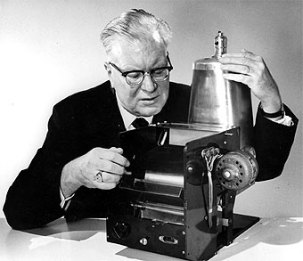
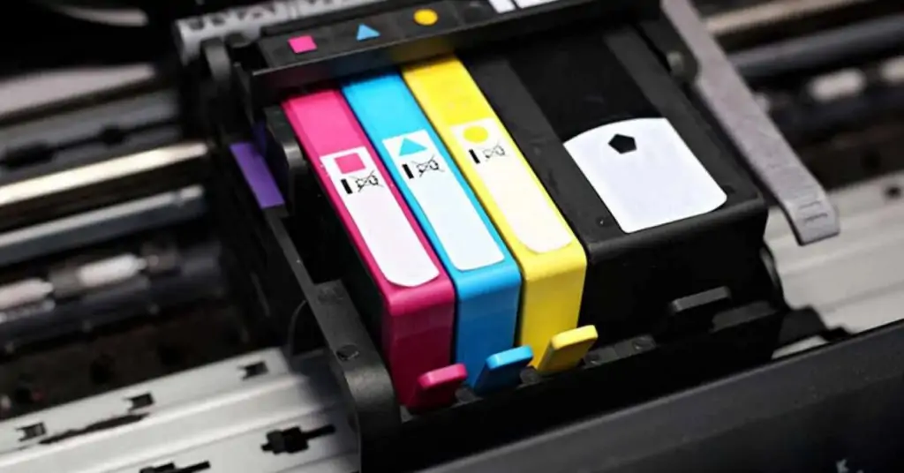
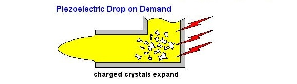

Indice
Historia
La historia de la impresora nace junto con la creación de la computadora,
la maquina analitica de Charles Babbage, que si bien no logro terminarla,
si termino los planos que incluian un mecanismo de impresión.

En 1935 Chester Carlson inventa la Xenografia(fotografia electronica) ya
descubre un material fotoconductor que se carga de electricidad estatica solo
en zonas iluminadas que lo lleva a crear la fotocopiadora.
Luego aparece la UNIVAC High Speed Printer; la primera impresora electricida
de alta velocidad en 1953; luego, en 1957 la impresion matricial llega por
parte de IBM con un mecanismo que se desplaza de izquierda a derecha
Fue hasta 1976 que las impresoras de inyección de tinta comienzan a hacerse
populares por su bajo costo, facil uso y comodida. (Aunque, la tecnologia de
esta impresora se descubrio y patento en 1948 por Rune Elmqvist Se le a atribuido
el invento por confusión a HP y Canon en la década de 1970 porque estos fueron los
que descubrieron la impresión de tinta continua Además de popularizarla, pero de
esto no se encuentra mucha información).
Definición
Una impresora, o más especificamente una impresora de inyección de tinta es
un tipo de impresora (de los muchos que hay) que utiliza micro gotas de tinta
para hacer las impresiones.
Si tienes una impresora en tu casa posiblemente sea una de estas son
muy baratas a comparacion de otros tipos. Su unica desventaja es que las tintas
sulene ser bastante caras.
Tipos, Modelos y Precios
Las primeras impresoras que se inventaron fueron las de impacto. Luego aparecieron las impresoras de tinta liquida. Estas son las más comunes en los hogares, por ser las más económicas a la hora de ser compradas. Sin embargo, son las más costosas para imprimir.
Las tintas rinden muy poco en relación a su precio. Además de producir una cantidad enorme de problemas a los usuarios.
Cartuchos con inyectores o boquillas incorporadas
En este tipo de cartuchos las boquillas de impresión o inyectores, están en el cartucho. Las marcas que más usan este tipo de consumibles son: Hp, Canon y Lexmark.
Cabezales Piezoeléctricos
Los cabezales piezoeléctricos, Son las boquillas o inyectores de impresión incorporadas dentro de la impresora. Esto se diseñó para minimizar el reemplazo de cartuchos. Sin embargo, se convirtió en el defecto más grave de esos modelos que lo llevan. Las marcas que más utilizan este sistema son: Epson y brother. También puede conseguirse este sistema en algunos modelos de HP y Canon